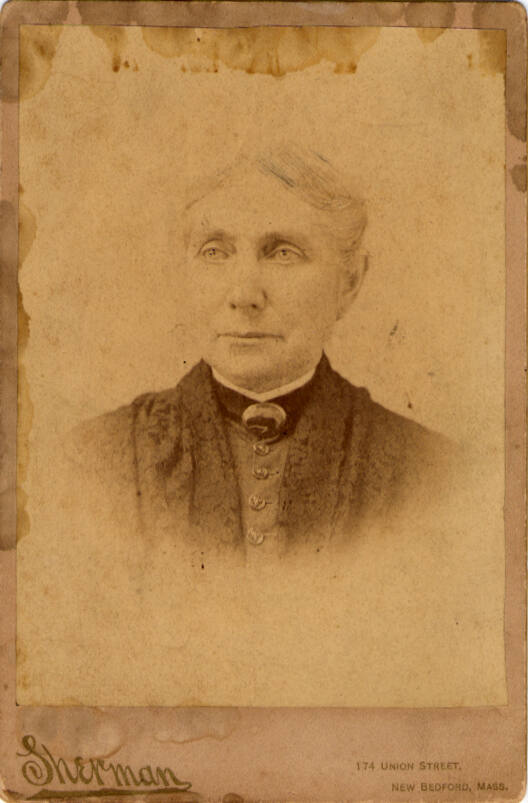

This map is one of a series compiled by the US Exploring Expedition led by Charles Wilkes in 1838 - 1842. It was published in 1845, in Philadelphia, by Lea and Blanchard.
As noted at the bottom of the map, "the shaded spots denote the whaling ground, the curved lines the currents, the arrows show their direction."
A selection of the seashells from the New Bedford Whaling Museum's 2024-2025 exhibit Up From The Depths have been referenced to the map in accordance with their known distribution. Most specimens are widely distributed, and their exact placement on this map, for the purposes of this project, coincide with moments noted in Charlotte DeHart's logbook that she kept on her 1857-1861 voyage aboard the whaling ship Roman 2nd. Because most of the specimens within the seashell collection lack provenance, Charlotte's logbook provides a story to guide one's own exploration across the map.
